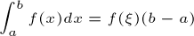
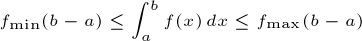

Outro teorema importante do cálculo integral é o do valor médio (para integrais).
Existe ao menos um ξ ∈ [a,b] tal que .
Mas não deixe a aparência desta expressão impressioná-lo(a), pois o significado dela é muito simples: independentemente de qual seja a função contínua f(x) e o intervalo [a,b], existe um retângulo cuja medida da base e da altura é (b - a) e f(ξ), respectivamente, e cuja área é igual à integral definida de f(x) no intervalo [a,b]. Vejamos por partes...
No plano cartesiano acima, arraste o ponto m até a abscissa - dentro do intervalo [a,b] - em que f(x) é mínima no intervalo [a,b]. Ao concluir, pressione "Próximo".
Imagine agora uma função g1(x) = f(), cujo gráfico é uma reta horizontal em y = f(). Note que f() é apenas um número. Vamos chamá-lo de fmin para simplificar.
Como em todo o intervalo [a,b], a área sob g1(x), que é simplesmente a área do retângulo com borda cinza na figura, é sempre menor ou igual à área procurada (visualize as áreas no plano cartesiano acima). Esta área é igual a fmin(b - a) (a medida da altura vezes a medida da base do retângulo). Entenda isso antes de prosseguir.
Próximo
Analogamente à situação anterior, se imaginarmos , então, como em todo o intervalo [a,b], a área sob g2(x), que é simplesmente , é sempre maior ou igual à área sob f(x). Logo, podemos escrever que

Se f(x) é contínua no intevalo [a,b] - e isto é muito importante - então ao variar de fmin até fmax, f(x) assumirá, para algum x em [a,b], um valor μ tal que , de modo que é igual à área procurada. Matematicamente,
μ é o chamado valor médio da função f(x) no intervalo [a,b], e como μ é um valor assumido por f(x) para algum x, chamamos esse x de ξ. Ou seja, f(ξ) = μ.
Vamos então expressar informalmente o teorema do valor médio: existe um retângulo de área f(ξ) (b - a), que é igual à integral definida de em [a,b].
Vamos colocar isto em prática: posicione o ponto m de modo que a área f(m)(b - a) seja aproximadamente igual à integral definida de f(x) no intervalo [a,b] (você não precisa fazer conta alguma para isso). Uma maneira de fazer isso é posicionar m de modo que a região pintada acima de f(m) seja visualmente igual àquela pintada abaixo de f(m).
Você talvez esteja se perguntado: mas se eu não sei a integral, como determinar o valor médio? Na verdade, o teorema do valor médio é útil na dedução de resultados mais práticos, como o próprio teorema fundamental do cálculo (veja uma demonstração aqui).
obs.: o que expusemos aqui é o chamado teorema do valor médio para integrais. Há também o teorema do valor médio para derivadas, que não usamos aqui.
Terminei